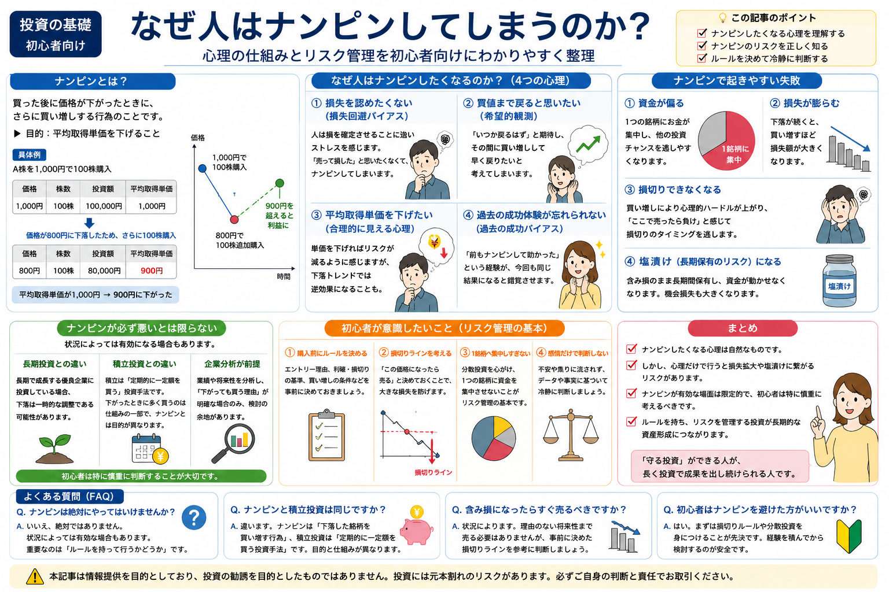

Investment Psychology
なぜ人はナンピンしてしまうのか？
ナンピンは、投資初心者が含み損を抱えたときに陥りやすい行動のひとつです。決して珍しいことではなく、「損を認めたくない」「買値まで戻ってほしい」と感じるのは心理的に自然な反応です。
しかし、感情だけで買い増しを続けると、資金が偏ったり、損失が大きくなったり、最終的に塩漬けにつながる場合があります。この記事では、ナンピンを推奨するのではなく、なぜ人がナンピンしたくなるのかを心理とリスク管理の面から整理します。
First
ナンピンは「心理的に自然」だが、危険もある

買った銘柄が下がると、多くの人は「ここで買えば平均単価が下がる」「少し戻れば助かる」と考えます。これは特別に弱い人だけがする判断ではなく、損失を避けたい人間の心理として自然に起こりやすいものです。
ただし、自然な心理であることと、投資判断として安全であることは別です。ナンピンは使い方を間違えると、損失を小さくするどころか、損失の中心に資金を集めてしまう行動になることがあります。
この記事では「ナンピン＝絶対悪」と決めつけるのではなく、初心者が感情だけで買い増ししないための考え方を整理します。
Basic
ナンピンとは？
ナンピンとは、買った後に価格が下がったとき、さらに同じ銘柄を買い増しして、平均取得単価を下げようとする行為です。
Step 01
最初に買う
例として、1株1,000円で100株買ったとします。この時点の平均取得単価は1,000円です。
Step 02
価格が下がる
その後、価格が800円まで下がると含み損になります。ここで「安くなった」と感じやすくなります。
Step 03
さらに買い増す
800円で追加購入すると、平均取得単価は下がります。ただし、保有数量とリスクも同時に増えます。
| 購入タイミング | 購入価格 | 株数 | 投資額 |
|---|---|---|---|
| 最初の購入 | 1,000円 | 100株 | 100,000円 |
| 下落後の買い増し | 800円 | 100株 | 80,000円 |
| 合計 | 平均900円 | 200株 | 180,000円 |
この例では、平均取得単価は1,000円から900円に下がります。価格が900円まで戻れば損益はほぼトントンになりますが、さらに下がった場合は200株分の損失を受けることになります。つまり、ナンピンは「助かりやすくなる面」と「損失額が大きくなりやすい面」の両方を持っています。
Psychology
なぜ人はナンピンしたくなるのか？
ナンピンしたくなる背景には、単なる知識不足だけでなく、損失を避けたい心理や過去の経験が関係しています。
損失を認めたくない
含み損を抱えると、「自分の判断が間違っていた」と認めるようで苦しく感じることがあります。そのため、売って損を確定するよりも、買い増して状況を変えたいと思いやすくなります。
買値まで戻ると思いたい
「一度は1,000円だったのだから、また戻るはず」と考えることがあります。しかし、過去の価格に戻る保証はありません。買値は自分にとって重要でも、市場全体にとって特別な価格とは限りません。
平均取得単価を下げたい
平均取得単価が下がると、少し戻るだけで助かるように見えます。ただし、これは見た目の損益分岐点が近くなるだけで、資金を追加投入している事実は変わりません。
過去の成功体験が忘れられない
以前にナンピンで助かった経験があると、「今回も同じように戻る」と考えやすくなります。成功体験は自信になりますが、毎回同じ結果になるとは限らない点に注意が必要です。
Risk
ナンピンで起きやすい失敗
資金が偏る
下がった銘柄に追加資金を入れ続けると、1銘柄への比率が高くなります。資金が偏ると、他の投資機会を逃しやすくなり、ひとつの値動きに資産全体が左右されやすくなります。
損失が膨らむ
ナンピン後にさらに下がると、保有数量が増えている分だけ損失額も大きくなります。「平均単価が下がったから安心」ではなく、「追加した資金もリスクにさらされている」と考える必要があります。
損切りできなくなる
追加で買うほど、損を確定する心理的な負担は大きくなります。損切りの考え方は、損切りとは？判断方法の例を解説でも整理していますが、判断が遅れるほど選択肢が狭くなる場合があります。
塩漬けになる
戻るまで待つしかない状態になると、資金が動かせなくなります。塩漬けという言葉の意味や関連用語は、塩漬け・証拠金・建玉とは？でも確認できます。
Neutral
ナンピンが必ず悪いとは限らない
ナンピンは危険な面がありますが、すべての買い増しが悪いわけではありません。大切なのは、感情で追加購入しているのか、事前の方針に沿って判断しているのかです。
長期投資との違い
長期投資では、企業や商品を長い目で見て保有する前提があります。価格が下がったから反射的に買うのではなく、保有理由が崩れていないかを確認することが重要です。基本は長期投資とは？でも解説しています。
積立投資との違い
積立投資は、事前に決めた金額を定期的に購入する方法です。含み損を取り返したい気持ちで買い増すナンピンとは、判断の出発点が異なります。詳しくは積立投資とは？も参考になります。
企業分析を前提とする考え方
業績・財務・事業内容などを確認し、価格下落の理由を考えたうえで買い増す場合もあります。ただし、初心者が十分な分析なしに「安くなったから」と判断するのは慎重に考えたいところです。
Rule
初心者が意識したいこと
-
購入前にルールを決める
買った後に考えると、感情が入りやすくなります。購入前に「どんな理由で買うのか」「どの条件なら見直すのか」を決めておくと、ナンピンの判断も冷静にしやすくなります。
-
損切りラインを考える
価格・チャート・業績など、何を基準に撤退を考えるのかを先に整理します。損切りの判断材料は、損切りとは？判断方法の例を解説の記事もあわせて確認できます。
-
1銘柄へ集中しすぎない
ナンピンを繰り返すと、気づかないうちに資金がひとつの銘柄へ集中することがあります。分散投資の考え方は、分散投資とは？でも解説しています。
-
感情だけで判断しない
「戻ってほしい」「損を取り返したい」という気持ちは自然ですが、それだけで追加購入すると判断がぶれやすくなります。買い増す理由を言葉で説明できるかを確認することが大切です。
Summary
まとめ
- ナンピンしたくなる心理は、損失を避けたい人間の自然な反応です。
- ただし、心理だけで行うナンピンは、損失拡大や資金の偏りにつながる場合があります。
- 平均取得単価が下がっても、追加資金を入れている以上、リスクも増えています。
- 長期投資や積立投資と、感情的なナンピンは分けて考える必要があります。
- 初心者ほど、購入前のルール・損切りライン・資金配分を意識することが大切です。
ナンピンは「助かるかもしれない」という希望を持ちやすい行動です。しかし、投資では希望だけで判断すると、身動きが取りにくくなることがあります。まずは、自分がなぜ買い増したいのかを整理し、ルールに沿った判断ができているか確認してみましょう。
FAQ
よくある質問
-
Q. ナンピンは絶対にやってはいけませんか？
絶対にやってはいけないとは限りません。ただし、感情だけで買い増す場合や、資金管理がない場合は危険です。買い増す理由、損切り条件、資金配分を説明できるかが重要です。 -
Q. ナンピンと積立投資は同じですか？
同じではありません。積立投資は事前に決めたルールで定期的に購入する方法です。一方、ナンピンは含み損になった後、平均取得単価を下げる目的で買い増す行動を指すことが多いです。 -
Q. 含み損になったらすぐ売るべきですか？
すぐ売るべきとは限りません。大切なのは、購入理由や保有目的が崩れていないか、事前に決めた損切りラインに達していないかを確認することです。 -
Q. 初心者はナンピンを避けた方がいいですか？
初心者は慎重に考えた方がよい行動です。特に、損失を取り戻したい気持ちだけで買い増すと、1銘柄に資金が偏りやすくなります。まずはルール作りと資金管理を優先しましょう。
Related Articles
あわせて読みたい記事
ナンピンの心理を理解したら、損切り・塩漬け・分散投資の考え方もあわせて確認しておくと、リスク管理を整理しやすくなります。
一般ユーザー目線の体験でおすすめの会社をご紹介

ご利用にあたっての注意事項
本記事は情報提供を目的としており、投資の勧誘を目的としたものではありません。株式・投資信託・外国証券等の取引は元本保証がなく、相場変動等により損失が生じる場合があります。取引開始前に、契約締結前交付書面や商品説明書、目論見書等を必ずご確認のうえ、ご自身の判断と責任でお取引ください。